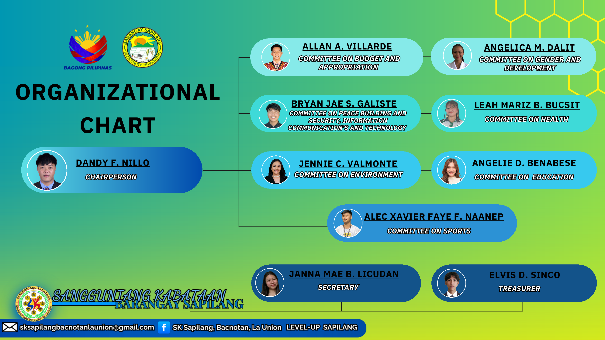

Official organizational structure of the Sangguniang Kabataan of Barangay Sapilang.
Meet the youth leaders entrusted to serve Barangay Sapilang.

Official Organizational Chart • Sangguniang Kabataan of Barangay Sapilang